import pandas as pd
import numpy as np
import matplotlib.pyplot as plt
import seaborn as snsData Preprocessing Case Study - Boulder Climate
Data Preprocessing Case Study - Boulder Climate
Data Explanation:
Source: https://psl.noaa.gov/boulder/getdata.html
Format: converted from .txt to .csv
- File contains Boulder daily maximum and minimum temperature, precipitation, snowfall and snow cover data.
- year,month, iday, imax_temp, imin_temp, precip, snowfall, snowdepth
- Temperatures are in degrees Fahrenheit and snow and precipitation are in inches.
- Precipitation is the total liquid equivalent of all forms of precipitation (rain, snow, hail,…).
- Missing values are indicated by -998.0.
- Trace values (less than 1/10 for snow and 1/100 for rain) are indicated by -999.0.
- File starts in 1897 though snow doesn’t start until August 1948.
- File is usually updated through the last full month.
Import the data
pandas.read_csv() is a function used to read a csv file and convert it into a pandas DataFrame. The function takes several arguments, some of which include:
header: This argument is used to specify the row number(s) to use as the column headers. By default, the first row of the csv file is used as the column header. You can specify a different row number to use as the header by passing an integer value (e.g.header=3) or you can specify that the csv file has no headers by passingNone(e.g.header=None)skiprows: This argument is used to specify the number of rows at the beginning of the file to skip. You can pass an integer value (e.g.skiprows=5) or you can pass a list of row numbers to skip (e.g.skiprows=[1,2,5])names: This argument is used to specify the column names for the DataFrame. If the csv file has no header or the header is being skipped, you can pass a list of column names to use (e.g.names=['col1', 'col2', 'col3'])
df = pd.read_csv('/work/boulderdaily.csv',
names = ['year','month', 'day', 'high', 'low', 'precip', 'snow', 'snowcover'],
parse_dates= {"date" : ['year', "month", "day"]},
keep_date_col=True, # this separates 'date' into 3 col 'year','month','day' (if false, single column = 'date)
header = None)
df.info()<class 'pandas.core.frame.DataFrame'>
RangeIndex: 46116 entries, 0 to 46115
Data columns (total 9 columns):
# Column Non-Null Count Dtype
--- ------ -------------- -----
0 date 46116 non-null object
1 year 46116 non-null object
2 month 46116 non-null object
3 day 46116 non-null object
4 high 46116 non-null int64
5 low 46116 non-null int64
6 precip 46116 non-null float64
7 snow 46116 non-null float64
8 snowcover 46116 non-null int64
dtypes: float64(2), int64(3), object(4)
memory usage: 3.2+ MBdf.head()| date | year | month | day | high | low | precip | snow | snowcover | |
|---|---|---|---|---|---|---|---|---|---|
| 0 | 1897 1 1 | 1897 | 1 | 1 | -998 | -998 | -998.0 | -998.0 | -998 |
| 1 | 1897 1 2 | 1897 | 1 | 2 | -998 | -998 | -998.0 | -998.0 | -998 |
| 2 | 1897 1 3 | 1897 | 1 | 3 | -998 | -998 | -998.0 | -998.0 | -998 |
| 3 | 1897 1 4 | 1897 | 1 | 4 | -998 | -998 | -998.0 | -998.0 | -998 |
| 4 | 1897 1 5 | 1897 | 1 | 5 | -998 | -998 | -998.0 | -998.0 | -998 |
Data Manipulation
Convert year/month/day to int
The astype() function in pandas is used to cast a pandas object to a specified data type. This function can be used to convert one or multiple columns in a DataFrame or Series to a different data type.
df['year'] = df['year'].astype('int')
df['month'] = df['month'].astype('int')
df['day'] = df['day'].astype('int')Parse date
The to_datetime() function in pandas is used to convert an object to a datetime object. It can take several arguments, including:
arg: The object to be converted. It can be a string, list, array, or series. format: A string representing the format of the input. This is useful when the input is a string and its format is not automatically detected.errors: A string or callable indicating how to handle errors during the conversion. The options include ‘raise’, ‘coerce’, ‘ignore’.utc: A boolean indicating whether to convert the datetime to UTC.dayfirst: A boolean indicating whether the first value of a date is the day or the month.yearfirst: A boolean indicating whether the first value of a date is the year or the month.exact: A boolean indicating whether to require an exact format match. Example :df['date'] = pd.to_datetime(df['date'], format='%d/%m/%Y', errors='coerce')
This code will convert the 'date' column of a DataFrame df to datetime format, assuming that the input is in the format 'dd/mm/yyyy'. If there are any errors during the conversion, they will be coerced (replaced with NaT).
#df['date'] = pd.to_datetime(df['date']) # this will not work
df.info()<class 'pandas.core.frame.DataFrame'>
RangeIndex: 46116 entries, 0 to 46115
Data columns (total 9 columns):
# Column Non-Null Count Dtype
--- ------ -------------- -----
0 date 46116 non-null object
1 year 46116 non-null int64
2 month 46116 non-null int64
3 day 46116 non-null int64
4 high 46116 non-null int64
5 low 46116 non-null int64
6 precip 46116 non-null float64
7 snow 46116 non-null float64
8 snowcover 46116 non-null int64
dtypes: float64(2), int64(6), object(1)
memory usage: 3.2+ MBParse date failed.
we find out the reason is there are invalid dates, such as 2021 Feb 29. We need to remove those error before parsing dates.
You can use the optional argument errors
df2 = df
df2['date'] = pd.to_datetime(df2['date'], errors = 'coerce') # errors='coerce' will ignore the errors
df2.info()<class 'pandas.core.frame.DataFrame'>
RangeIndex: 46116 entries, 0 to 46115
Data columns (total 9 columns):
# Column Non-Null Count Dtype
--- ------ -------------- -----
0 date 46020 non-null datetime64[ns]
1 year 46116 non-null int64
2 month 46116 non-null int64
3 day 46116 non-null int64
4 high 46116 non-null int64
5 low 46116 non-null int64
6 precip 46116 non-null float64
7 snow 46116 non-null float64
8 snowcover 46116 non-null int64
dtypes: datetime64[ns](1), float64(2), int64(6)
memory usage: 3.2 MBThe dropna() function in pandas is used to remove missing values from a DataFrame. The inplace argument is used to specify whether the function should make changes to the original DataFrame or return a new DataFrame with the changes. If inplace=True, the function will make changes to the original DataFrame and nothing will be returned. If inplace=False, the function will return a new DataFrame with missing values removed. The default value of inplace is False
df2.dropna(inplace=True)
df2.info()<class 'pandas.core.frame.DataFrame'>
Int64Index: 46020 entries, 0 to 46115
Data columns (total 9 columns):
# Column Non-Null Count Dtype
--- ------ -------------- -----
0 date 46020 non-null datetime64[ns]
1 year 46020 non-null int64
2 month 46020 non-null int64
3 day 46020 non-null int64
4 high 46020 non-null int64
5 low 46020 non-null int64
6 precip 46020 non-null float64
7 snow 46020 non-null float64
8 snowcover 46020 non-null int64
dtypes: datetime64[ns](1), float64(2), int64(6)
memory usage: 3.5 MBYou can also find and drop the invalid dates
Here you can always save the modified df as a temporary one, df3, for example. If you are confident, you can have inplace = True as the argument to modify the df directly.
The drop() function in pandas is used to drop specified labels from rows or columns of a DataFrame. It takes several arguments:
labels: This is the single or list of labels to be removed.axis: This specifies whether to drop rows (0or'index') or columns (1or'columns'). The default value is0.index: This is the single or list of index to be removed.columns: This is the single or list of columns to be removed.
df3 = df.drop(df[(df['month'] == 2) & (df['day'] == 29)].index) # can work to do the same thing as above
# but not the best...
df3.info()<class 'pandas.core.frame.DataFrame'>
Int64Index: 45990 entries, 0 to 46115
Data columns (total 9 columns):
# Column Non-Null Count Dtype
--- ------ -------------- -----
0 date 45990 non-null datetime64[ns]
1 year 45990 non-null int64
2 month 45990 non-null int64
3 day 45990 non-null int64
4 high 45990 non-null int64
5 low 45990 non-null int64
6 precip 45990 non-null float64
7 snow 45990 non-null float64
8 snowcover 45990 non-null int64
dtypes: datetime64[ns](1), float64(2), int64(6)
memory usage: 3.5 MBdf3['date'] = pd.to_datetime(df3['date'])
df3.info()<class 'pandas.core.frame.DataFrame'>
Int64Index: 45990 entries, 0 to 46115
Data columns (total 9 columns):
# Column Non-Null Count Dtype
--- ------ -------------- -----
0 date 45990 non-null datetime64[ns]
1 year 45990 non-null int64
2 month 45990 non-null int64
3 day 45990 non-null int64
4 high 45990 non-null int64
5 low 45990 non-null int64
6 precip 45990 non-null float64
7 snow 45990 non-null float64
8 snowcover 45990 non-null int64
dtypes: datetime64[ns](1), float64(2), int64(6)
memory usage: 3.5 MBSave the modification
Now it looks good. You can save the modified df and replace the original one.
df = df2df.describe()| year | month | day | high | low | precip | snow | snowcover | |
|---|---|---|---|---|---|---|---|---|
| count | 46020.000000 | 46020.000000 | 46020.000000 | 46020.000000 | 46020.000000 | 46020.000000 | 46020.000000 | 46020.000000 |
| mean | 1959.501630 | 6.523077 | 15.729205 | 48.228879 | 21.091569 | -104.650636 | -450.247625 | -472.979596 |
| std | 36.371259 | 3.448700 | 8.800005 | 131.855477 | 133.456999 | 305.992189 | 496.780334 | 498.659503 |
| min | 1897.000000 | 1.000000 | 1.000000 | -998.000000 | -999.000000 | -999.000000 | -999.000000 | -999.000000 |
| 25% | 1928.000000 | 4.000000 | 8.000000 | 51.000000 | 26.000000 | 0.000000 | -998.000000 | -998.000000 |
| 50% | 1960.000000 | 7.000000 | 16.000000 | 65.000000 | 38.000000 | 0.000000 | 0.000000 | 0.000000 |
| 75% | 1991.000000 | 10.000000 | 23.000000 | 80.000000 | 52.000000 | 0.000000 | 0.000000 | 0.000000 |
| max | 2022.000000 | 12.000000 | 31.000000 | 104.000000 | 82.000000 | 9.080000 | 22.100000 | 27.000000 |
Missing values
In the original dataset, missing values are marked as -998 and -999. We should take care of that coding.
Find missing values
def findNone(x):
if x < -200:
return None
else:
return xcols = df.columns[4:]
for col in cols:
df[col] = df[col].apply(findNone)df.info()<class 'pandas.core.frame.DataFrame'>
Int64Index: 46020 entries, 0 to 46115
Data columns (total 9 columns):
# Column Non-Null Count Dtype
--- ------ -------------- -----
0 date 46020 non-null datetime64[ns]
1 year 46020 non-null int64
2 month 46020 non-null int64
3 day 46020 non-null int64
4 high 45314 non-null float64
5 low 45255 non-null float64
6 precip 41196 non-null float64
7 snow 25253 non-null float64
8 snowcover 24198 non-null float64
dtypes: datetime64[ns](1), float64(5), int64(3)
memory usage: 4.5 MBDrop is simple
We can drop or fill (with different options) these missing falues.
df_drop = df.dropna()
df_drop.info()<class 'pandas.core.frame.DataFrame'>
Int64Index: 20810 entries, 18879 to 46115
Data columns (total 9 columns):
# Column Non-Null Count Dtype
--- ------ -------------- -----
0 date 20810 non-null datetime64[ns]
1 year 20810 non-null int64
2 month 20810 non-null int64
3 day 20810 non-null int64
4 high 20810 non-null float64
5 low 20810 non-null float64
6 precip 20810 non-null float64
7 snow 20810 non-null float64
8 snowcover 20810 non-null float64
dtypes: datetime64[ns](1), float64(5), int64(3)
memory usage: 1.6 MBFilling takes more effort
df_filled_with_mean = df.fillna(df.mean())
df_filled_with_mean.info()<class 'pandas.core.frame.DataFrame'>
Int64Index: 46020 entries, 0 to 46115
Data columns (total 9 columns):
# Column Non-Null Count Dtype
--- ------ -------------- -----
0 date 46020 non-null datetime64[ns]
1 year 46020 non-null int64
2 month 46020 non-null int64
3 day 46020 non-null int64
4 high 46020 non-null float64
5 low 46020 non-null float64
6 precip 46020 non-null float64
7 snow 46020 non-null float64
8 snowcover 46020 non-null float64
dtypes: datetime64[ns](1), float64(5), int64(3)
memory usage: 4.5 MB
/tmp/ipykernel_1349/1845878698.py:1: FutureWarning: DataFrame.mean and DataFrame.median with numeric_only=None will include datetime64 and datetime64tz columns in a future version.
df_filled_with_mean = df.fillna(df.mean())df_timeseries = df.sort_values(by=['year', 'month', 'date'])
df_timeseries.head(10)| date | year | month | day | high | low | precip | snow | snowcover | |
|---|---|---|---|---|---|---|---|---|---|
| 0 | 1897-01-01 | 1897 | 1 | 1 | NaN | NaN | NaN | NaN | NaN |
| 1 | 1897-01-02 | 1897 | 1 | 2 | NaN | NaN | NaN | NaN | NaN |
| 2 | 1897-01-03 | 1897 | 1 | 3 | NaN | NaN | NaN | NaN | NaN |
| 3 | 1897-01-04 | 1897 | 1 | 4 | NaN | NaN | NaN | NaN | NaN |
| 4 | 1897-01-05 | 1897 | 1 | 5 | NaN | NaN | NaN | NaN | NaN |
| 5 | 1897-01-06 | 1897 | 1 | 6 | NaN | NaN | NaN | NaN | NaN |
| 6 | 1897-01-07 | 1897 | 1 | 7 | NaN | NaN | NaN | NaN | NaN |
| 7 | 1897-01-08 | 1897 | 1 | 8 | NaN | NaN | NaN | NaN | NaN |
| 8 | 1897-01-09 | 1897 | 1 | 9 | NaN | NaN | NaN | NaN | NaN |
| 9 | 1897-01-10 | 1897 | 1 | 10 | NaN | NaN | NaN | NaN | NaN |
df_backfill = df_timeseries.fillna(method = 'bfill')
df_backfill.describe()| year | month | day | high | low | precip | snow | snowcover | |
|---|---|---|---|---|---|---|---|---|
| count | 46020.000000 | 46020.000000 | 46020.000000 | 46020.000000 | 46020.000000 | 46020.000000 | 46020.000000 | 46020.000000 |
| mean | 1959.501630 | 6.523077 | 15.729205 | 64.581704 | 38.404715 | 0.058873 | 0.153646 | 0.343220 |
| std | 36.371259 | 3.448700 | 8.800005 | 18.316433 | 16.037665 | 0.198771 | 0.936575 | 1.413121 |
| min | 1897.000000 | 1.000000 | 1.000000 | -12.000000 | -33.000000 | 0.000000 | 0.000000 | 0.000000 |
| 25% | 1928.000000 | 4.000000 | 8.000000 | 51.000000 | 27.000000 | 0.000000 | 0.000000 | 0.000000 |
| 50% | 1960.000000 | 7.000000 | 16.000000 | 65.000000 | 39.000000 | 0.000000 | 0.000000 | 0.000000 |
| 75% | 1991.000000 | 10.000000 | 23.000000 | 80.000000 | 52.000000 | 0.010000 | 0.000000 | 0.000000 |
| max | 2022.000000 | 12.000000 | 31.000000 | 104.000000 | 82.000000 | 9.080000 | 22.100000 | 27.000000 |
df_forwardfill = df_timeseries.fillna(method = 'ffill')
df_forwardfill.describe()| year | month | day | high | low | precip | snow | snowcover | |
|---|---|---|---|---|---|---|---|---|
| count | 46020.000000 | 46020.000000 | 46020.000000 | 45900.000000 | 45900.000000 | 45900.000000 | 27181.000000 | 27181.000000 |
| mean | 1959.501630 | 6.523077 | 15.729205 | 64.682244 | 38.460327 | 0.056652 | 0.252412 | 0.606968 |
| std | 36.371259 | 3.448700 | 8.800005 | 18.353563 | 16.128064 | 0.193257 | 1.182312 | 1.787849 |
| min | 1897.000000 | 1.000000 | 1.000000 | -12.000000 | -33.000000 | 0.000000 | 0.000000 | 0.000000 |
| 25% | 1928.000000 | 4.000000 | 8.000000 | 51.000000 | 27.000000 | 0.000000 | 0.000000 | 0.000000 |
| 50% | 1960.000000 | 7.000000 | 16.000000 | 66.000000 | 39.000000 | 0.000000 | 0.000000 | 0.000000 |
| 75% | 1991.000000 | 10.000000 | 23.000000 | 80.000000 | 52.000000 | 0.010000 | 0.000000 | 0.000000 |
| max | 2022.000000 | 12.000000 | 31.000000 | 104.000000 | 82.000000 | 9.080000 | 22.100000 | 27.000000 |
df_day_avg = df[df.columns[2:]].groupby(['month', 'day']).mean()
df_day_avg.columns = ['high_mean', 'low_mean', 'precip_mean', 'snow_mean', 'snowcover_mean']
df_day_avg| high_mean | low_mean | precip_mean | snow_mean | snowcover_mean | ||
|---|---|---|---|---|---|---|
| month | day | |||||
| 1 | 1 | 41.243902 | 18.747967 | 0.025478 | 0.529851 | 2.152542 |
| 2 | 43.715447 | 17.861789 | 0.011441 | 0.294203 | 1.968254 | |
| 3 | 43.780488 | 19.634146 | 0.025424 | 0.453623 | 2.351852 | |
| 4 | 43.943089 | 19.918699 | 0.028509 | 0.523077 | 2.322034 | |
| 5 | 44.691057 | 20.146341 | 0.026991 | 0.557812 | 2.410714 | |
| ... | ... | ... | ... | ... | ... | ... |
| 12 | 27 | 44.640000 | 20.520000 | 0.042456 | 0.728125 | 2.245614 |
| 28 | 46.232000 | 21.624000 | 0.019009 | 0.412308 | 2.000000 | |
| 29 | 44.200000 | 21.120000 | 0.035726 | 0.616923 | 2.203390 | |
| 30 | 44.640000 | 20.696000 | 0.024091 | 0.340000 | 2.200000 | |
| 31 | 43.312000 | 18.832000 | 0.015929 | 0.390909 | 2.118644 |
366 rows × 5 columns
df_day_max = df[df.columns[2:]].groupby(['month', 'day']).max()
df_day_max.columns = ['high_max', 'low_max', 'precip_max', 'snow_max', 'snowcover_max']
df_day_max| high_max | low_max | precip_max | snow_max | snowcover_max | ||
|---|---|---|---|---|---|---|
| month | day | |||||
| 1 | 1 | 70.0 | 45.0 | 0.46 | 7.5 | 12.0 |
| 2 | 70.0 | 49.0 | 0.32 | 6.0 | 11.0 | |
| 3 | 68.0 | 44.0 | 0.59 | 8.5 | 12.0 | |
| 4 | 67.0 | 44.0 | 0.83 | 10.7 | 13.0 | |
| 5 | 69.0 | 44.0 | 0.91 | 11.5 | 17.0 | |
| ... | ... | ... | ... | ... | ... | ... |
| 12 | 27 | 74.0 | 44.0 | 0.98 | 12.6 | 19.0 |
| 28 | 67.0 | 47.0 | 0.44 | 9.0 | 16.0 | |
| 29 | 69.0 | 44.0 | 1.26 | 12.5 | 17.0 | |
| 30 | 71.0 | 49.0 | 0.52 | 6.2 | 13.0 | |
| 31 | 66.0 | 48.0 | 0.32 | 8.0 | 13.0 |
366 rows × 5 columns
df_day_min = df[df.columns[2:]].groupby(['month', 'day']).min()
df_day_min.columns = ['high_min', 'low_min', 'precip_min', 'snow_min', 'snowcover_min']
df_day_min| high_min | low_min | precip_min | snow_min | snowcover_min | ||
|---|---|---|---|---|---|---|
| month | day | |||||
| 1 | 1 | -3.0 | -14.0 | 0.0 | 0.0 | 0.0 |
| 2 | 4.0 | -14.0 | 0.0 | 0.0 | 0.0 | |
| 3 | 4.0 | -10.0 | 0.0 | 0.0 | 0.0 | |
| 4 | 8.0 | -14.0 | 0.0 | 0.0 | 0.0 | |
| 5 | 8.0 | -13.0 | 0.0 | 0.0 | 0.0 | |
| ... | ... | ... | ... | ... | ... | ... |
| 12 | 27 | 8.0 | -10.0 | 0.0 | 0.0 | 0.0 |
| 28 | 15.0 | -8.0 | 0.0 | 0.0 | 0.0 | |
| 29 | 11.0 | -10.0 | 0.0 | 0.0 | 0.0 | |
| 30 | 8.0 | -11.0 | 0.0 | 0.0 | 0.0 | |
| 31 | 6.0 | -18.0 | 0.0 | 0.0 | 0.0 |
366 rows × 5 columns
df_day = pd.merge(df_day_max,df_day_min, on = ['month', 'day'])
df_day = pd.merge(df_day,df_day_avg, on = ['month', 'day'])
df_day.head()| high_max | low_max | precip_max | snow_max | snowcover_max | high_min | low_min | precip_min | snow_min | snowcover_min | high_mean | low_mean | precip_mean | snow_mean | snowcover_mean | ||
|---|---|---|---|---|---|---|---|---|---|---|---|---|---|---|---|---|
| month | day | |||||||||||||||
| 1 | 1 | 70.0 | 45.0 | 0.46 | 7.5 | 12.0 | -3.0 | -14.0 | 0.0 | 0.0 | 0.0 | 41.243902 | 18.747967 | 0.025478 | 0.529851 | 2.152542 |
| 2 | 70.0 | 49.0 | 0.32 | 6.0 | 11.0 | 4.0 | -14.0 | 0.0 | 0.0 | 0.0 | 43.715447 | 17.861789 | 0.011441 | 0.294203 | 1.968254 | |
| 3 | 68.0 | 44.0 | 0.59 | 8.5 | 12.0 | 4.0 | -10.0 | 0.0 | 0.0 | 0.0 | 43.780488 | 19.634146 | 0.025424 | 0.453623 | 2.351852 | |
| 4 | 67.0 | 44.0 | 0.83 | 10.7 | 13.0 | 8.0 | -14.0 | 0.0 | 0.0 | 0.0 | 43.943089 | 19.918699 | 0.028509 | 0.523077 | 2.322034 | |
| 5 | 69.0 | 44.0 | 0.91 | 11.5 | 17.0 | 8.0 | -13.0 | 0.0 | 0.0 | 0.0 | 44.691057 | 20.146341 | 0.026991 | 0.557812 | 2.410714 |
df_day.info()<class 'pandas.core.frame.DataFrame'>
MultiIndex: 366 entries, (1, 1) to (12, 31)
Data columns (total 15 columns):
# Column Non-Null Count Dtype
--- ------ -------------- -----
0 high_max 366 non-null float64
1 low_max 366 non-null float64
2 precip_max 366 non-null float64
3 snow_max 366 non-null float64
4 snowcover_max 366 non-null float64
5 high_min 366 non-null float64
6 low_min 366 non-null float64
7 precip_min 366 non-null float64
8 snow_min 366 non-null float64
9 snowcover_min 366 non-null float64
10 high_mean 366 non-null float64
11 low_mean 366 non-null float64
12 precip_mean 366 non-null float64
13 snow_mean 366 non-null float64
14 snowcover_mean 366 non-null float64
dtypes: float64(15)
memory usage: 45.4 KBdf = pd.merge(df, df_day, on = ['month', 'day'])
df.info()<class 'pandas.core.frame.DataFrame'>
Int64Index: 46020 entries, 0 to 46019
Data columns (total 24 columns):
# Column Non-Null Count Dtype
--- ------ -------------- -----
0 date 46020 non-null datetime64[ns]
1 year 46020 non-null int64
2 month 46020 non-null int64
3 day 46020 non-null int64
4 high 45314 non-null float64
5 low 45255 non-null float64
6 precip 41196 non-null float64
7 snow 25253 non-null float64
8 snowcover 24198 non-null float64
9 high_max 46020 non-null float64
10 low_max 46020 non-null float64
11 precip_max 46020 non-null float64
12 snow_max 46020 non-null float64
13 snowcover_max 46020 non-null float64
14 high_min 46020 non-null float64
15 low_min 46020 non-null float64
16 precip_min 46020 non-null float64
17 snow_min 46020 non-null float64
18 snowcover_min 46020 non-null float64
19 high_mean 46020 non-null float64
20 low_mean 46020 non-null float64
21 precip_mean 46020 non-null float64
22 snow_mean 46020 non-null float64
23 snowcover_mean 46020 non-null float64
dtypes: datetime64[ns](1), float64(20), int64(3)
memory usage: 8.8 MBdf['high'].fillna(df['high_mean'], inplace = True)
df['low'].fillna(df['low_mean'], inplace = True)
df['precip'].fillna(df['precip_mean'], inplace = True)
df['snow'].fillna(df['snow_mean'], inplace = True)
df['snowcover'].fillna(df['snowcover_mean'], inplace = True)
df.info()<class 'pandas.core.frame.DataFrame'>
Int64Index: 46020 entries, 0 to 46019
Data columns (total 24 columns):
# Column Non-Null Count Dtype
--- ------ -------------- -----
0 date 46020 non-null datetime64[ns]
1 year 46020 non-null int64
2 month 46020 non-null int64
3 day 46020 non-null int64
4 high 46020 non-null float64
5 low 46020 non-null float64
6 precip 46020 non-null float64
7 snow 46020 non-null float64
8 snowcover 46020 non-null float64
9 high_max 46020 non-null float64
10 low_max 46020 non-null float64
11 precip_max 46020 non-null float64
12 snow_max 46020 non-null float64
13 snowcover_max 46020 non-null float64
14 high_min 46020 non-null float64
15 low_min 46020 non-null float64
16 precip_min 46020 non-null float64
17 snow_min 46020 non-null float64
18 snowcover_min 46020 non-null float64
19 high_mean 46020 non-null float64
20 low_mean 46020 non-null float64
21 precip_mean 46020 non-null float64
22 snow_mean 46020 non-null float64
23 snowcover_mean 46020 non-null float64
dtypes: datetime64[ns](1), float64(20), int64(3)
memory usage: 8.8 MBExtra: Regression
The pandas library does not have a built-in function for filling missing values with regression. However, you can use the scikit-learn library’s LinearRegression class to train a linear regression model on the non-missing data, and then use the trained model to predict the missing values.
df = df.sort_values(by = 'date')Data understanding
Attribute relations
df.plot(x='date', y = ['high','low'], figsize = (100, 10))
sns.relplot(data = df, x = 'date', y = 'high', col = 'month')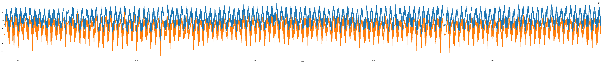
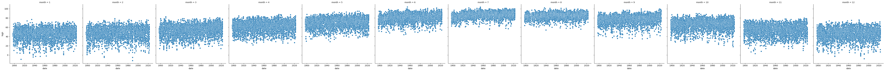
df.plot(x='date', y = ['precip','precip_mean'], figsize = (100, 10))<AxesSubplot: xlabel='date'>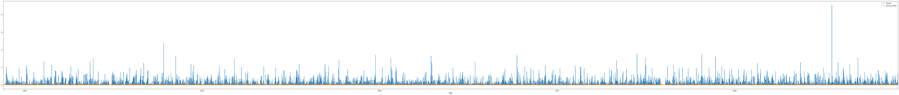
df[df['year']==2022].plot(x='date', y = ['precip','precip_mean'], figsize = (100, 10))<AxesSubplot: xlabel='date'>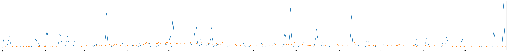
df[df['year']==2022].plot(x='date', y = ['high','high_mean'], figsize = (100, 10))<AxesSubplot: xlabel='date'>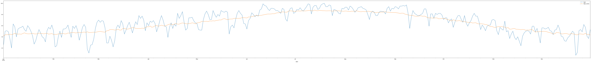
df[(df['month']==12) & (df['year'] == 2022)].plot(x='date', y = ['snow','snow_mean'], figsize = (100, 10))<AxesSubplot: xlabel='date'>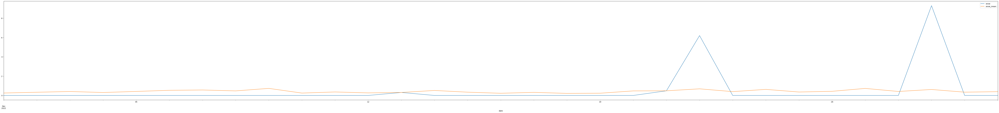
df[df['date'] >= np.datetime64('2022-12-01')].plot(x='date', y = ['snow','snow_mean'], figsize = (100, 10))<AxesSubplot: xlabel='date'>df.plot(x='date', y = ['snow','snowcover'], figsize = (100, 10))
sns.relplot(data = df, x = 'date', y = 'snow', col = 'month')
sns.relplot(data = df, x = 'date', y = 'snowcover', col = 'month')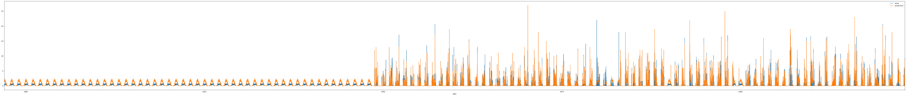
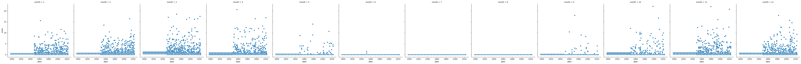
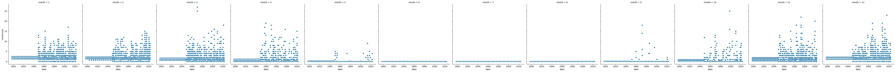
sns.relplot(data = df, x = 'high', y = 'low', col = 'month')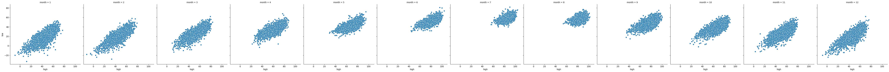
sns.relplot(data = df, x = 'snow', y = 'snowcover', col = 'month')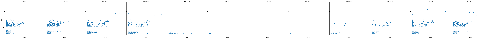
#sns.pairplot(data = df)Distribution plots
sns.displot(data = df, x = 'high')
sns.displot(data = df, x = 'high', col = 'month')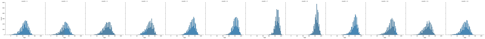
sns.displot(data = df, x = 'high', hue = 'month', kind = 'kde', multiple = 'stack')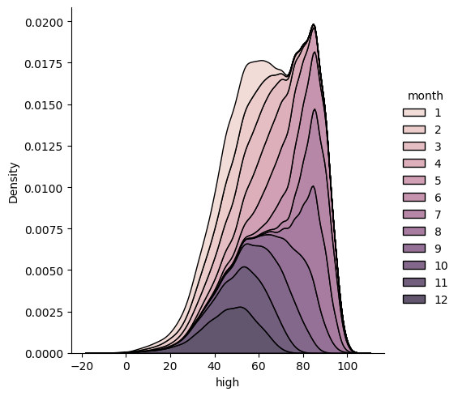
sns.displot(data = df, x = 'low', hue = 'month', kind = 'kde')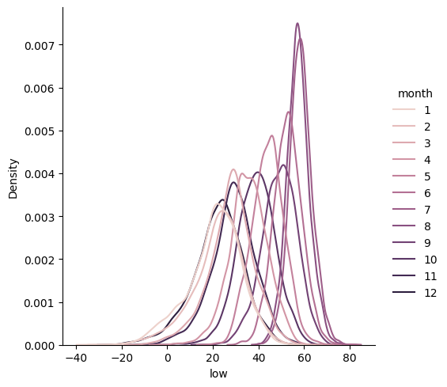
sns.displot(data = df, x = 'snow', hue = 'month', kind = 'kde', multiple = 'stack')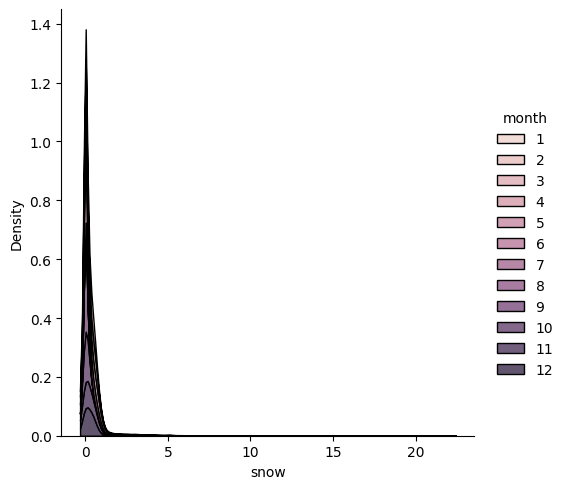
sns.displot(data = df, x = 'snowcover', hue = 'month', kind = 'kde', multiple = 'stack')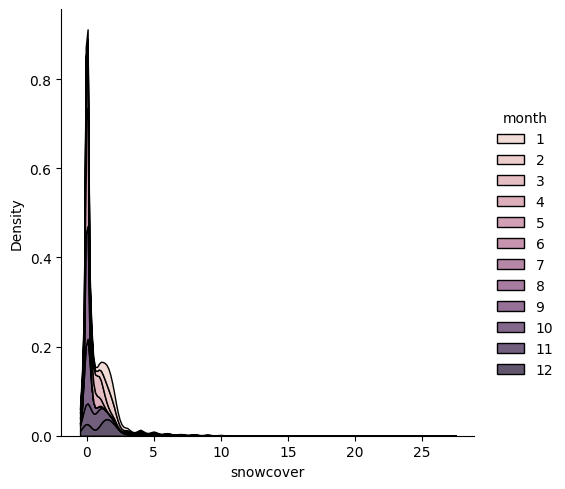
sns.displot(data = df, x = 'high', y = 'low', hue = 'month', kind = 'kde')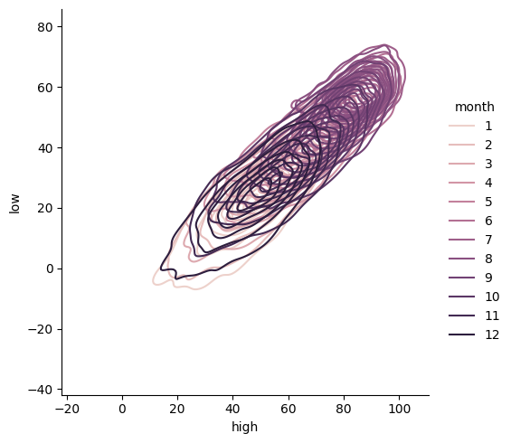
sns.displot(data = df, x = 'snow', y = 'snowcover', hue = 'month', kind = 'kde')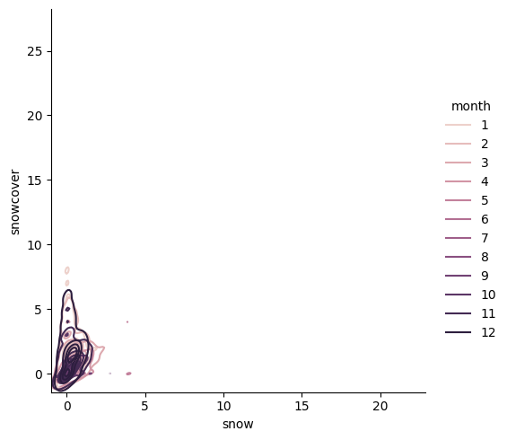
Data preprocessing
Create a new attribute, tavg
We may want to get the average temperature of the day, rather than max and min.
sns.displot(data = df, x = 'high', kind = 'hist')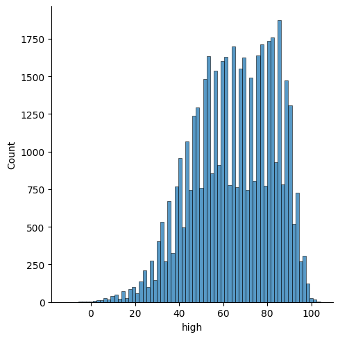
sns.displot(data = df, x = 'low', kind = 'hist')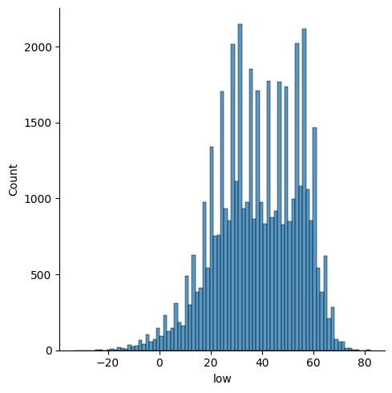
df['tavg'] = (df['high'] + df['low']) / 2
df.info()<class 'pandas.core.frame.DataFrame'>
Int64Index: 46020 entries, 0 to 45989
Data columns (total 25 columns):
# Column Non-Null Count Dtype
--- ------ -------------- -----
0 date 46020 non-null datetime64[ns]
1 year 46020 non-null int64
2 month 46020 non-null int64
3 day 46020 non-null int64
4 high 46020 non-null float64
5 low 46020 non-null float64
6 precip 46020 non-null float64
7 snow 46020 non-null float64
8 snowcover 46020 non-null float64
9 high_max 46020 non-null float64
10 low_max 46020 non-null float64
11 precip_max 46020 non-null float64
12 snow_max 46020 non-null float64
13 snowcover_max 46020 non-null float64
14 high_min 46020 non-null float64
15 low_min 46020 non-null float64
16 precip_min 46020 non-null float64
17 snow_min 46020 non-null float64
18 snowcover_min 46020 non-null float64
19 high_mean 46020 non-null float64
20 low_mean 46020 non-null float64
21 precip_mean 46020 non-null float64
22 snow_mean 46020 non-null float64
23 snowcover_mean 46020 non-null float64
24 tavg 46020 non-null float64
dtypes: datetime64[ns](1), float64(21), int64(3)
memory usage: 10.1 MBsns.displot(data = df, x = 'tavg', kind = 'hist')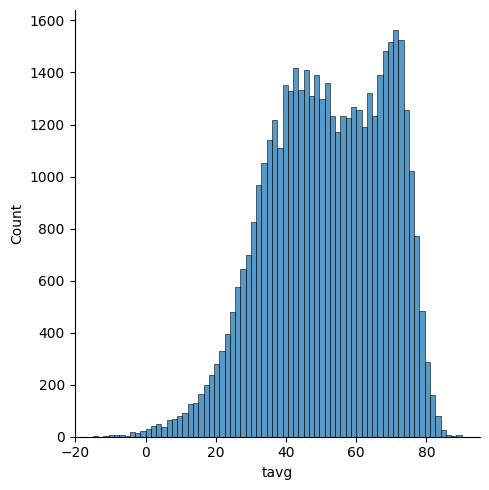
sns.displot(data = df, x = 'tavg', hue = 'month', kind = 'kde', multiple = 'stack')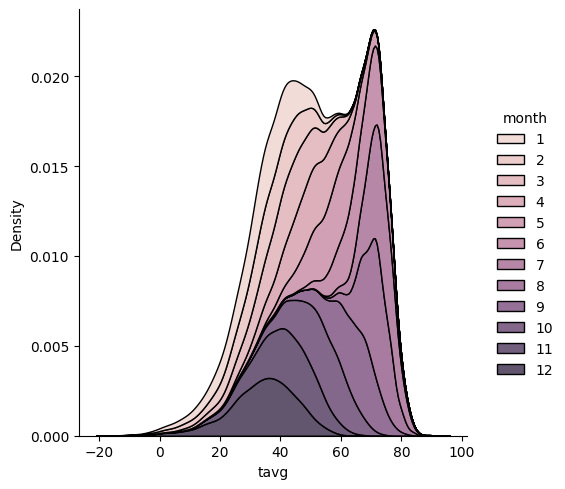
Create a new attribute, weather
We may want to include a weather condition based on the precip, snow, and snowcover.
conditions = [
(df['precip'] ==0),
(df['precip'] > 0) & (df['snow'] ==0),
(df['precip'] > 0) & (df['snow'] > 0),
]
values = ['sunny', 'rain', 'snow']
df['weather'] = np.select(conditions, values)
df.info()<class 'pandas.core.frame.DataFrame'>
Int64Index: 46020 entries, 0 to 45989
Data columns (total 26 columns):
# Column Non-Null Count Dtype
--- ------ -------------- -----
0 date 46020 non-null datetime64[ns]
1 year 46020 non-null int64
2 month 46020 non-null int64
3 day 46020 non-null int64
4 high 46020 non-null float64
5 low 46020 non-null float64
6 precip 46020 non-null float64
7 snow 46020 non-null float64
8 snowcover 46020 non-null float64
9 high_max 46020 non-null float64
10 low_max 46020 non-null float64
11 precip_max 46020 non-null float64
12 snow_max 46020 non-null float64
13 snowcover_max 46020 non-null float64
14 high_min 46020 non-null float64
15 low_min 46020 non-null float64
16 precip_min 46020 non-null float64
17 snow_min 46020 non-null float64
18 snowcover_min 46020 non-null float64
19 high_mean 46020 non-null float64
20 low_mean 46020 non-null float64
21 precip_mean 46020 non-null float64
22 snow_mean 46020 non-null float64
23 snowcover_mean 46020 non-null float64
24 tavg 46020 non-null float64
25 weather 46020 non-null object
dtypes: datetime64[ns](1), float64(21), int64(3), object(1)
memory usage: 10.5+ MBdf['weather'].value_counts()sunny 30345
rain 8802
snow 6873
Name: weather, dtype: int64sns.catplot(data = df, x = 'weather', y = 'tavg')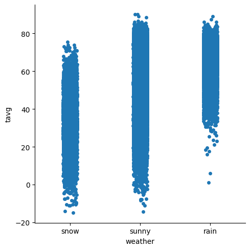
sns.catplot(data = df, x = 'weather', y = 'tavg', kind = 'violin', hue = 'month')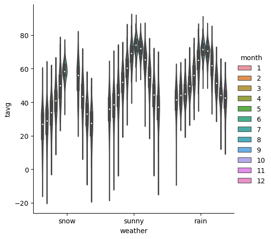
sns.catplot(data = df, x = 'weather', y = 'snow')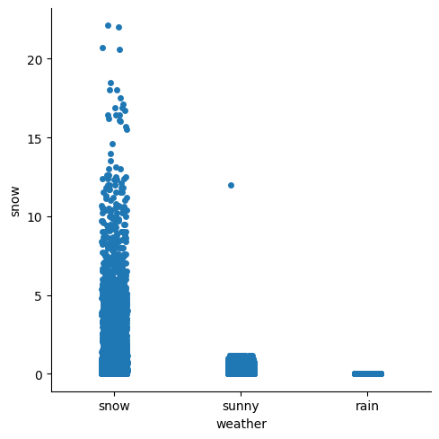
sns.catplot(data = df, x = 'weather', y = 'snow', kind = 'violin', hue = 'month')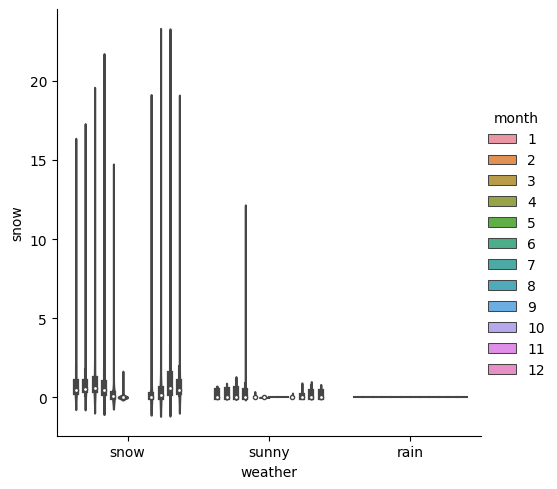
pd.DataFrame({"weather" : df['weather'].value_counts()}).plot.pie(y= "weather", figsize = (5, 5))<AxesSubplot: ylabel='weather'>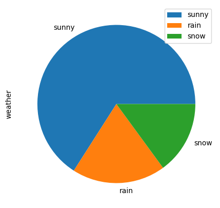
sns.catplot(data = df, x = 'month', y = 'tavg', kind = 'box', col = 'weather')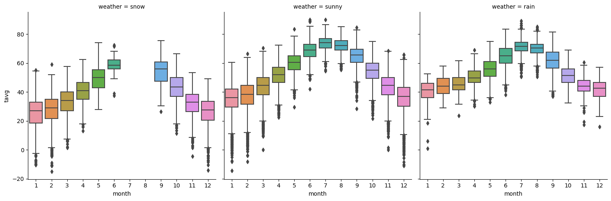
df.boxplot(column = ['tavg'], by =['month'], figsize = (30, 10))
plt.xticks(rotation=90)(array([ 1, 2, 3, 4, 5, 6, 7, 8, 9, 10, 11, 12]),
[Text(1, 0, '1'),
Text(2, 0, '2'),
Text(3, 0, '3'),
Text(4, 0, '4'),
Text(5, 0, '5'),
Text(6, 0, '6'),
Text(7, 0, '7'),
Text(8, 0, '8'),
Text(9, 0, '9'),
Text(10, 0, '10'),
Text(11, 0, '11'),
Text(12, 0, '12')])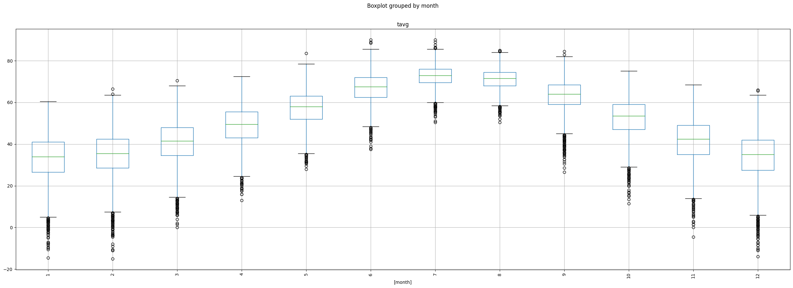
df.boxplot(column = ['tavg'], by =['month', 'day'], figsize = (100, 10))
plt.xticks(rotation=90)(array([ 1, 2, 3, 4, 5, 6, 7, 8, 9, 10, 11, 12, 13,
14, 15, 16, 17, 18, 19, 20, 21, 22, 23, 24, 25, 26,
27, 28, 29, 30, 31, 32, 33, 34, 35, 36, 37, 38, 39,
40, 41, 42, 43, 44, 45, 46, 47, 48, 49, 50, 51, 52,
53, 54, 55, 56, 57, 58, 59, 60, 61, 62, 63, 64, 65,
66, 67, 68, 69, 70, 71, 72, 73, 74, 75, 76, 77, 78,
79, 80, 81, 82, 83, 84, 85, 86, 87, 88, 89, 90, 91,
92, 93, 94, 95, 96, 97, 98, 99, 100, 101, 102, 103, 104,
105, 106, 107, 108, 109, 110, 111, 112, 113, 114, 115, 116, 117,
118, 119, 120, 121, 122, 123, 124, 125, 126, 127, 128, 129, 130,
131, 132, 133, 134, 135, 136, 137, 138, 139, 140, 141, 142, 143,
144, 145, 146, 147, 148, 149, 150, 151, 152, 153, 154, 155, 156,
157, 158, 159, 160, 161, 162, 163, 164, 165, 166, 167, 168, 169,
170, 171, 172, 173, 174, 175, 176, 177, 178, 179, 180, 181, 182,
183, 184, 185, 186, 187, 188, 189, 190, 191, 192, 193, 194, 195,
196, 197, 198, 199, 200, 201, 202, 203, 204, 205, 206, 207, 208,
209, 210, 211, 212, 213, 214, 215, 216, 217, 218, 219, 220, 221,
222, 223, 224, 225, 226, 227, 228, 229, 230, 231, 232, 233, 234,
235, 236, 237, 238, 239, 240, 241, 242, 243, 244, 245, 246, 247,
248, 249, 250, 251, 252, 253, 254, 255, 256, 257, 258, 259, 260,
261, 262, 263, 264, 265, 266, 267, 268, 269, 270, 271, 272, 273,
274, 275, 276, 277, 278, 279, 280, 281, 282, 283, 284, 285, 286,
287, 288, 289, 290, 291, 292, 293, 294, 295, 296, 297, 298, 299,
300, 301, 302, 303, 304, 305, 306, 307, 308, 309, 310, 311, 312,
313, 314, 315, 316, 317, 318, 319, 320, 321, 322, 323, 324, 325,
326, 327, 328, 329, 330, 331, 332, 333, 334, 335, 336, 337, 338,
339, 340, 341, 342, 343, 344, 345, 346, 347, 348, 349, 350, 351,
352, 353, 354, 355, 356, 357, 358, 359, 360, 361, 362, 363, 364,
365, 366]),
[Text(1, 0, '(1, 1)'),
Text(2, 0, '(1, 2)'),
Text(3, 0, '(1, 3)'),
Text(4, 0, '(1, 4)'),
Text(5, 0, '(1, 5)'),
Text(6, 0, '(1, 6)'),
Text(7, 0, '(1, 7)'),
Text(8, 0, '(1, 8)'),
Text(9, 0, '(1, 9)'),
Text(10, 0, '(1, 10)'),
Text(11, 0, '(1, 11)'),
Text(12, 0, '(1, 12)'),
Text(13, 0, '(1, 13)'),
Text(14, 0, '(1, 14)'),
Text(15, 0, '(1, 15)'),
Text(16, 0, '(1, 16)'),
Text(17, 0, '(1, 17)'),
Text(18, 0, '(1, 18)'),
Text(19, 0, '(1, 19)'),
Text(20, 0, '(1, 20)'),
Text(21, 0, '(1, 21)'),
Text(22, 0, '(1, 22)'),
Text(23, 0, '(1, 23)'),
Text(24, 0, '(1, 24)'),
Text(25, 0, '(1, 25)'),
Text(26, 0, '(1, 26)'),
Text(27, 0, '(1, 27)'),
Text(28, 0, '(1, 28)'),
Text(29, 0, '(1, 29)'),
Text(30, 0, '(1, 30)'),
Text(31, 0, '(1, 31)'),
Text(32, 0, '(2, 1)'),
Text(33, 0, '(2, 2)'),
Text(34, 0, '(2, 3)'),
Text(35, 0, '(2, 4)'),
Text(36, 0, '(2, 5)'),
Text(37, 0, '(2, 6)'),
Text(38, 0, '(2, 7)'),
Text(39, 0, '(2, 8)'),
Text(40, 0, '(2, 9)'),
Text(41, 0, '(2, 10)'),
Text(42, 0, '(2, 11)'),
Text(43, 0, '(2, 12)'),
Text(44, 0, '(2, 13)'),
Text(45, 0, '(2, 14)'),
Text(46, 0, '(2, 15)'),
Text(47, 0, '(2, 16)'),
Text(48, 0, '(2, 17)'),
Text(49, 0, '(2, 18)'),
Text(50, 0, '(2, 19)'),
Text(51, 0, '(2, 20)'),
Text(52, 0, '(2, 21)'),
Text(53, 0, '(2, 22)'),
Text(54, 0, '(2, 23)'),
Text(55, 0, '(2, 24)'),
Text(56, 0, '(2, 25)'),
Text(57, 0, '(2, 26)'),
Text(58, 0, '(2, 27)'),
Text(59, 0, '(2, 28)'),
Text(60, 0, '(2, 29)'),
Text(61, 0, '(3, 1)'),
Text(62, 0, '(3, 2)'),
Text(63, 0, '(3, 3)'),
Text(64, 0, '(3, 4)'),
Text(65, 0, '(3, 5)'),
Text(66, 0, '(3, 6)'),
Text(67, 0, '(3, 7)'),
Text(68, 0, '(3, 8)'),
Text(69, 0, '(3, 9)'),
Text(70, 0, '(3, 10)'),
Text(71, 0, '(3, 11)'),
Text(72, 0, '(3, 12)'),
Text(73, 0, '(3, 13)'),
Text(74, 0, '(3, 14)'),
Text(75, 0, '(3, 15)'),
Text(76, 0, '(3, 16)'),
Text(77, 0, '(3, 17)'),
Text(78, 0, '(3, 18)'),
Text(79, 0, '(3, 19)'),
Text(80, 0, '(3, 20)'),
Text(81, 0, '(3, 21)'),
Text(82, 0, '(3, 22)'),
Text(83, 0, '(3, 23)'),
Text(84, 0, '(3, 24)'),
Text(85, 0, '(3, 25)'),
Text(86, 0, '(3, 26)'),
Text(87, 0, '(3, 27)'),
Text(88, 0, '(3, 28)'),
Text(89, 0, '(3, 29)'),
Text(90, 0, '(3, 30)'),
Text(91, 0, '(3, 31)'),
Text(92, 0, '(4, 1)'),
Text(93, 0, '(4, 2)'),
Text(94, 0, '(4, 3)'),
Text(95, 0, '(4, 4)'),
Text(96, 0, '(4, 5)'),
Text(97, 0, '(4, 6)'),
Text(98, 0, '(4, 7)'),
Text(99, 0, '(4, 8)'),
Text(100, 0, '(4, 9)'),
Text(101, 0, '(4, 10)'),
Text(102, 0, '(4, 11)'),
Text(103, 0, '(4, 12)'),
Text(104, 0, '(4, 13)'),
Text(105, 0, '(4, 14)'),
Text(106, 0, '(4, 15)'),
Text(107, 0, '(4, 16)'),
Text(108, 0, '(4, 17)'),
Text(109, 0, '(4, 18)'),
Text(110, 0, '(4, 19)'),
Text(111, 0, '(4, 20)'),
Text(112, 0, '(4, 21)'),
Text(113, 0, '(4, 22)'),
Text(114, 0, '(4, 23)'),
Text(115, 0, '(4, 24)'),
Text(116, 0, '(4, 25)'),
Text(117, 0, '(4, 26)'),
Text(118, 0, '(4, 27)'),
Text(119, 0, '(4, 28)'),
Text(120, 0, '(4, 29)'),
Text(121, 0, '(4, 30)'),
Text(122, 0, '(5, 1)'),
Text(123, 0, '(5, 2)'),
Text(124, 0, '(5, 3)'),
Text(125, 0, '(5, 4)'),
Text(126, 0, '(5, 5)'),
Text(127, 0, '(5, 6)'),
Text(128, 0, '(5, 7)'),
Text(129, 0, '(5, 8)'),
Text(130, 0, '(5, 9)'),
Text(131, 0, '(5, 10)'),
Text(132, 0, '(5, 11)'),
Text(133, 0, '(5, 12)'),
Text(134, 0, '(5, 13)'),
Text(135, 0, '(5, 14)'),
Text(136, 0, '(5, 15)'),
Text(137, 0, '(5, 16)'),
Text(138, 0, '(5, 17)'),
Text(139, 0, '(5, 18)'),
Text(140, 0, '(5, 19)'),
Text(141, 0, '(5, 20)'),
Text(142, 0, '(5, 21)'),
Text(143, 0, '(5, 22)'),
Text(144, 0, '(5, 23)'),
Text(145, 0, '(5, 24)'),
Text(146, 0, '(5, 25)'),
Text(147, 0, '(5, 26)'),
Text(148, 0, '(5, 27)'),
Text(149, 0, '(5, 28)'),
Text(150, 0, '(5, 29)'),
Text(151, 0, '(5, 30)'),
Text(152, 0, '(5, 31)'),
Text(153, 0, '(6, 1)'),
Text(154, 0, '(6, 2)'),
Text(155, 0, '(6, 3)'),
Text(156, 0, '(6, 4)'),
Text(157, 0, '(6, 5)'),
Text(158, 0, '(6, 6)'),
Text(159, 0, '(6, 7)'),
Text(160, 0, '(6, 8)'),
Text(161, 0, '(6, 9)'),
Text(162, 0, '(6, 10)'),
Text(163, 0, '(6, 11)'),
Text(164, 0, '(6, 12)'),
Text(165, 0, '(6, 13)'),
Text(166, 0, '(6, 14)'),
Text(167, 0, '(6, 15)'),
Text(168, 0, '(6, 16)'),
Text(169, 0, '(6, 17)'),
Text(170, 0, '(6, 18)'),
Text(171, 0, '(6, 19)'),
Text(172, 0, '(6, 20)'),
Text(173, 0, '(6, 21)'),
Text(174, 0, '(6, 22)'),
Text(175, 0, '(6, 23)'),
Text(176, 0, '(6, 24)'),
Text(177, 0, '(6, 25)'),
Text(178, 0, '(6, 26)'),
Text(179, 0, '(6, 27)'),
Text(180, 0, '(6, 28)'),
Text(181, 0, '(6, 29)'),
Text(182, 0, '(6, 30)'),
Text(183, 0, '(7, 1)'),
Text(184, 0, '(7, 2)'),
Text(185, 0, '(7, 3)'),
Text(186, 0, '(7, 4)'),
Text(187, 0, '(7, 5)'),
Text(188, 0, '(7, 6)'),
Text(189, 0, '(7, 7)'),
Text(190, 0, '(7, 8)'),
Text(191, 0, '(7, 9)'),
Text(192, 0, '(7, 10)'),
Text(193, 0, '(7, 11)'),
Text(194, 0, '(7, 12)'),
Text(195, 0, '(7, 13)'),
Text(196, 0, '(7, 14)'),
Text(197, 0, '(7, 15)'),
Text(198, 0, '(7, 16)'),
Text(199, 0, '(7, 17)'),
Text(200, 0, '(7, 18)'),
Text(201, 0, '(7, 19)'),
Text(202, 0, '(7, 20)'),
Text(203, 0, '(7, 21)'),
Text(204, 0, '(7, 22)'),
Text(205, 0, '(7, 23)'),
Text(206, 0, '(7, 24)'),
Text(207, 0, '(7, 25)'),
Text(208, 0, '(7, 26)'),
Text(209, 0, '(7, 27)'),
Text(210, 0, '(7, 28)'),
Text(211, 0, '(7, 29)'),
Text(212, 0, '(7, 30)'),
Text(213, 0, '(7, 31)'),
Text(214, 0, '(8, 1)'),
Text(215, 0, '(8, 2)'),
Text(216, 0, '(8, 3)'),
Text(217, 0, '(8, 4)'),
Text(218, 0, '(8, 5)'),
Text(219, 0, '(8, 6)'),
Text(220, 0, '(8, 7)'),
Text(221, 0, '(8, 8)'),
Text(222, 0, '(8, 9)'),
Text(223, 0, '(8, 10)'),
Text(224, 0, '(8, 11)'),
Text(225, 0, '(8, 12)'),
Text(226, 0, '(8, 13)'),
Text(227, 0, '(8, 14)'),
Text(228, 0, '(8, 15)'),
Text(229, 0, '(8, 16)'),
Text(230, 0, '(8, 17)'),
Text(231, 0, '(8, 18)'),
Text(232, 0, '(8, 19)'),
Text(233, 0, '(8, 20)'),
Text(234, 0, '(8, 21)'),
Text(235, 0, '(8, 22)'),
Text(236, 0, '(8, 23)'),
Text(237, 0, '(8, 24)'),
Text(238, 0, '(8, 25)'),
Text(239, 0, '(8, 26)'),
Text(240, 0, '(8, 27)'),
Text(241, 0, '(8, 28)'),
Text(242, 0, '(8, 29)'),
Text(243, 0, '(8, 30)'),
Text(244, 0, '(8, 31)'),
Text(245, 0, '(9, 1)'),
Text(246, 0, '(9, 2)'),
Text(247, 0, '(9, 3)'),
Text(248, 0, '(9, 4)'),
Text(249, 0, '(9, 5)'),
Text(250, 0, '(9, 6)'),
Text(251, 0, '(9, 7)'),
Text(252, 0, '(9, 8)'),
Text(253, 0, '(9, 9)'),
Text(254, 0, '(9, 10)'),
Text(255, 0, '(9, 11)'),
Text(256, 0, '(9, 12)'),
Text(257, 0, '(9, 13)'),
Text(258, 0, '(9, 14)'),
Text(259, 0, '(9, 15)'),
Text(260, 0, '(9, 16)'),
Text(261, 0, '(9, 17)'),
Text(262, 0, '(9, 18)'),
Text(263, 0, '(9, 19)'),
Text(264, 0, '(9, 20)'),
Text(265, 0, '(9, 21)'),
Text(266, 0, '(9, 22)'),
Text(267, 0, '(9, 23)'),
Text(268, 0, '(9, 24)'),
Text(269, 0, '(9, 25)'),
Text(270, 0, '(9, 26)'),
Text(271, 0, '(9, 27)'),
Text(272, 0, '(9, 28)'),
Text(273, 0, '(9, 29)'),
Text(274, 0, '(9, 30)'),
Text(275, 0, '(10, 1)'),
Text(276, 0, '(10, 2)'),
Text(277, 0, '(10, 3)'),
Text(278, 0, '(10, 4)'),
Text(279, 0, '(10, 5)'),
Text(280, 0, '(10, 6)'),
Text(281, 0, '(10, 7)'),
Text(282, 0, '(10, 8)'),
Text(283, 0, '(10, 9)'),
Text(284, 0, '(10, 10)'),
Text(285, 0, '(10, 11)'),
Text(286, 0, '(10, 12)'),
Text(287, 0, '(10, 13)'),
Text(288, 0, '(10, 14)'),
Text(289, 0, '(10, 15)'),
Text(290, 0, '(10, 16)'),
Text(291, 0, '(10, 17)'),
Text(292, 0, '(10, 18)'),
Text(293, 0, '(10, 19)'),
Text(294, 0, '(10, 20)'),
Text(295, 0, '(10, 21)'),
Text(296, 0, '(10, 22)'),
Text(297, 0, '(10, 23)'),
Text(298, 0, '(10, 24)'),
Text(299, 0, '(10, 25)'),
Text(300, 0, '(10, 26)'),
Text(301, 0, '(10, 27)'),
Text(302, 0, '(10, 28)'),
Text(303, 0, '(10, 29)'),
Text(304, 0, '(10, 30)'),
Text(305, 0, '(10, 31)'),
Text(306, 0, '(11, 1)'),
Text(307, 0, '(11, 2)'),
Text(308, 0, '(11, 3)'),
Text(309, 0, '(11, 4)'),
Text(310, 0, '(11, 5)'),
Text(311, 0, '(11, 6)'),
Text(312, 0, '(11, 7)'),
Text(313, 0, '(11, 8)'),
Text(314, 0, '(11, 9)'),
Text(315, 0, '(11, 10)'),
Text(316, 0, '(11, 11)'),
Text(317, 0, '(11, 12)'),
Text(318, 0, '(11, 13)'),
Text(319, 0, '(11, 14)'),
Text(320, 0, '(11, 15)'),
Text(321, 0, '(11, 16)'),
Text(322, 0, '(11, 17)'),
Text(323, 0, '(11, 18)'),
Text(324, 0, '(11, 19)'),
Text(325, 0, '(11, 20)'),
Text(326, 0, '(11, 21)'),
Text(327, 0, '(11, 22)'),
Text(328, 0, '(11, 23)'),
Text(329, 0, '(11, 24)'),
Text(330, 0, '(11, 25)'),
Text(331, 0, '(11, 26)'),
Text(332, 0, '(11, 27)'),
Text(333, 0, '(11, 28)'),
Text(334, 0, '(11, 29)'),
Text(335, 0, '(11, 30)'),
Text(336, 0, '(12, 1)'),
Text(337, 0, '(12, 2)'),
Text(338, 0, '(12, 3)'),
Text(339, 0, '(12, 4)'),
Text(340, 0, '(12, 5)'),
Text(341, 0, '(12, 6)'),
Text(342, 0, '(12, 7)'),
Text(343, 0, '(12, 8)'),
Text(344, 0, '(12, 9)'),
Text(345, 0, '(12, 10)'),
Text(346, 0, '(12, 11)'),
Text(347, 0, '(12, 12)'),
Text(348, 0, '(12, 13)'),
Text(349, 0, '(12, 14)'),
Text(350, 0, '(12, 15)'),
Text(351, 0, '(12, 16)'),
Text(352, 0, '(12, 17)'),
Text(353, 0, '(12, 18)'),
Text(354, 0, '(12, 19)'),
Text(355, 0, '(12, 20)'),
Text(356, 0, '(12, 21)'),
Text(357, 0, '(12, 22)'),
Text(358, 0, '(12, 23)'),
Text(359, 0, '(12, 24)'),
Text(360, 0, '(12, 25)'),
Text(361, 0, '(12, 26)'),
Text(362, 0, '(12, 27)'),
Text(363, 0, '(12, 28)'),
Text(364, 0, '(12, 29)'),
Text(365, 0, '(12, 30)'),
Text(366, 0, '(12, 31)')])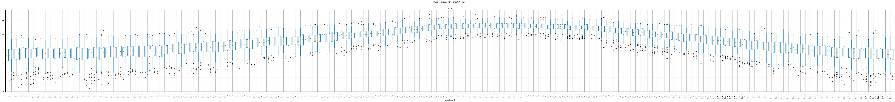
Create a new attribute, season
conditions = [
(df['month'] == 12) | (df['month'] == 1) | (df['month'] == 2),
(df['month'] == 3) | (df['month'] == 4) | (df['month'] == 5),
(df['month'] == 6) | (df['month'] == 7) | (df['month'] == 8),
(df['month'] == 9) | (df['month'] == 10) | (df['month'] == 11),
]
values = ['winter', 'spring', 'summer', 'fall']
df['season'] = np.select(conditions, values)
df.head()| date | year | month | day | high | low | precip | snow | snowcover | high_max | ... | snow_min | snowcover_min | high_mean | low_mean | precip_mean | snow_mean | snowcover_mean | tavg | weather | season | |
|---|---|---|---|---|---|---|---|---|---|---|---|---|---|---|---|---|---|---|---|---|---|
| 0 | 1897-01-01 | 1897 | 1 | 1 | 41.243902 | 18.747967 | 0.025478 | 0.529851 | 2.152542 | 70.0 | ... | 0.0 | 0.0 | 41.243902 | 18.747967 | 0.025478 | 0.529851 | 2.152542 | 29.995935 | snow | winter |
| 126 | 1897-01-02 | 1897 | 1 | 2 | 43.715447 | 17.861789 | 0.011441 | 0.294203 | 1.968254 | 70.0 | ... | 0.0 | 0.0 | 43.715447 | 17.861789 | 0.011441 | 0.294203 | 1.968254 | 30.788618 | snow | winter |
| 252 | 1897-01-03 | 1897 | 1 | 3 | 43.780488 | 19.634146 | 0.025424 | 0.453623 | 2.351852 | 68.0 | ... | 0.0 | 0.0 | 43.780488 | 19.634146 | 0.025424 | 0.453623 | 2.351852 | 31.707317 | snow | winter |
| 378 | 1897-01-04 | 1897 | 1 | 4 | 43.943089 | 19.918699 | 0.028509 | 0.523077 | 2.322034 | 67.0 | ... | 0.0 | 0.0 | 43.943089 | 19.918699 | 0.028509 | 0.523077 | 2.322034 | 31.930894 | snow | winter |
| 504 | 1897-01-05 | 1897 | 1 | 5 | 44.691057 | 20.146341 | 0.026991 | 0.557812 | 2.410714 | 69.0 | ... | 0.0 | 0.0 | 44.691057 | 20.146341 | 0.026991 | 0.557812 | 2.410714 | 32.418699 | snow | winter |
5 rows × 27 columns
sns.displot(data = df, x = 'tavg', kind = 'kde', multiple = 'stack', hue = 'season')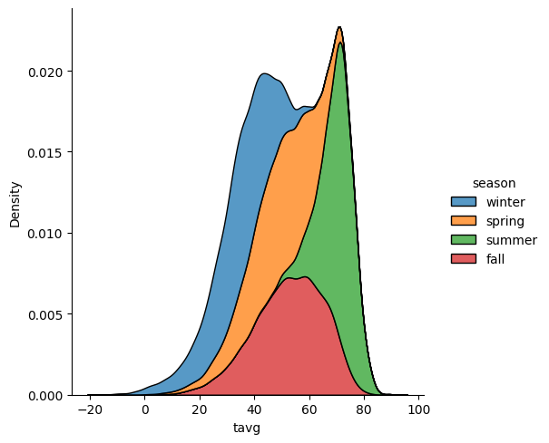
sns.catplot(data = df, x = 'season', y = 'tavg', kind = 'box')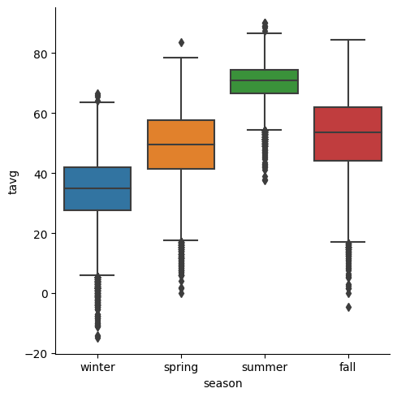
sns.catplot(data = df, x = 'weather', y = 'tavg', kind = 'box', col = 'season')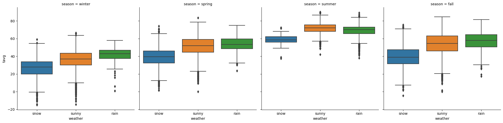
Create a new attribute, current
df['current'] = np.select([df['year'] == 2022, df['year'] != 2022],['current', 'past'])
df.info()<class 'pandas.core.frame.DataFrame'>
Int64Index: 46020 entries, 0 to 45989
Data columns (total 28 columns):
# Column Non-Null Count Dtype
--- ------ -------------- -----
0 date 46020 non-null datetime64[ns]
1 year 46020 non-null int64
2 month 46020 non-null int64
3 day 46020 non-null int64
4 high 46020 non-null float64
5 low 46020 non-null float64
6 precip 46020 non-null float64
7 snow 46020 non-null float64
8 snowcover 46020 non-null float64
9 high_max 46020 non-null float64
10 low_max 46020 non-null float64
11 precip_max 46020 non-null float64
12 snow_max 46020 non-null float64
13 snowcover_max 46020 non-null float64
14 high_min 46020 non-null float64
15 low_min 46020 non-null float64
16 precip_min 46020 non-null float64
17 snow_min 46020 non-null float64
18 snowcover_min 46020 non-null float64
19 high_mean 46020 non-null float64
20 low_mean 46020 non-null float64
21 precip_mean 46020 non-null float64
22 snow_mean 46020 non-null float64
23 snowcover_mean 46020 non-null float64
24 tavg 46020 non-null float64
25 weather 46020 non-null object
26 season 46020 non-null object
27 current 46020 non-null object
dtypes: datetime64[ns](1), float64(21), int64(3), object(3)
memory usage: 11.2+ MBsns.relplot(data = df, x = 'high', y = 'low', hue = 'current')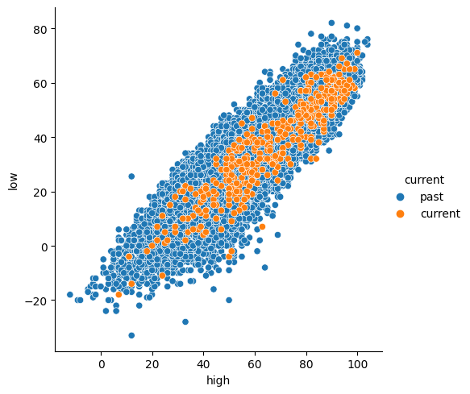
sns.relplot(data = df, x = 'snow', y = 'snowcover', hue = 'current')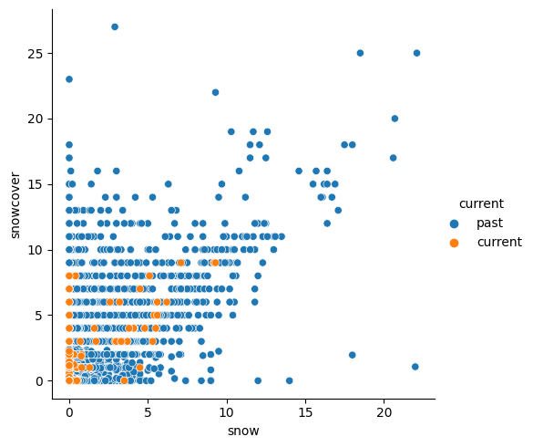
sns.relplot(data = df, x = 'tavg', y = 'precip', hue = 'current')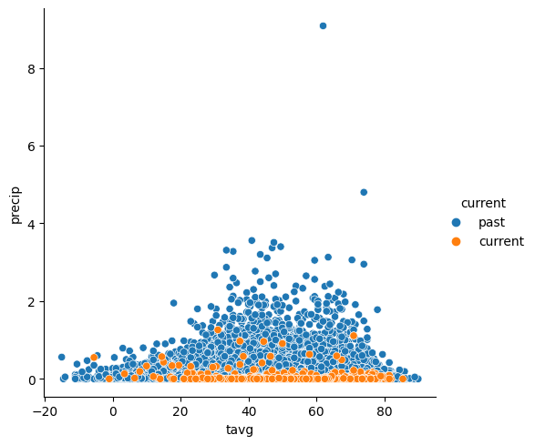
sns.relplot(data = df, x = 'tavg', y = 'precip', hue = 'current', col = 'season')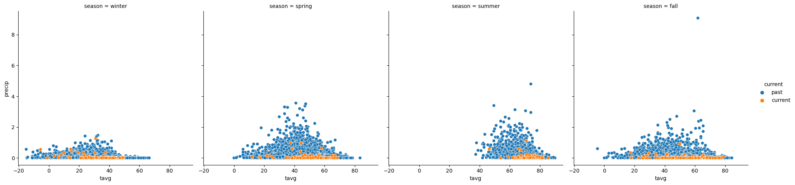
df.loc[(df['current'] == 'current') & (df['season'] == 'summer')]| date | year | month | day | high | low | precip | snow | snowcover | high_max | ... | snowcover_min | high_mean | low_mean | precip_mean | snow_mean | snowcover_mean | tavg | weather | season | current | |
|---|---|---|---|---|---|---|---|---|---|---|---|---|---|---|---|---|---|---|---|---|---|
| 19151 | 2022-06-01 | 2022 | 6 | 1 | 54.0 | 39.0 | 0.580000 | 0.0 | 0.0 | 89.0 | ... | 0.0 | 73.806452 | 48.096774 | 0.118348 | 0.000000 | 0.0 | 46.5 | rain | summer | current |
| 19277 | 2022-06-02 | 2022 | 6 | 2 | 69.0 | 39.0 | 0.000000 | 0.0 | 0.0 | 92.0 | ... | 0.0 | 75.588710 | 48.274194 | 0.062946 | 0.021127 | 0.0 | 54.0 | sunny | summer | current |
| 19403 | 2022-06-03 | 2022 | 6 | 3 | 73.0 | 45.0 | 0.060000 | 0.0 | 0.0 | 95.0 | ... | 0.0 | 75.419355 | 48.870968 | 0.090370 | 0.009859 | 0.0 | 59.0 | rain | summer | current |
| 19529 | 2022-06-04 | 2022 | 6 | 4 | 83.0 | 44.0 | 0.000000 | 0.0 | 0.0 | 94.0 | ... | 0.0 | 76.129032 | 49.193548 | 0.125727 | 0.000000 | 0.0 | 63.5 | sunny | summer | current |
| 19655 | 2022-06-05 | 2022 | 6 | 5 | 80.0 | 52.0 | 0.093125 | 0.0 | 0.0 | 95.0 | ... | 0.0 | 76.790323 | 49.822581 | 0.093125 | 0.000000 | 0.0 | 66.0 | rain | summer | current |
| ... | ... | ... | ... | ... | ... | ... | ... | ... | ... | ... | ... | ... | ... | ... | ... | ... | ... | ... | ... | ... | ... |
| 30113 | 2022-08-27 | 2022 | 8 | 27 | 91.0 | 56.0 | 0.000000 | 0.0 | 0.0 | 96.0 | ... | 0.0 | 84.032520 | 56.886179 | 0.031028 | 0.000000 | 0.0 | 73.5 | sunny | summer | current |
| 30239 | 2022-08-28 | 2022 | 8 | 28 | 94.0 | 69.0 | 0.000000 | 0.0 | 0.0 | 96.0 | ... | 0.0 | 83.910569 | 56.341463 | 0.035688 | 0.000000 | 0.0 | 81.5 | sunny | summer | current |
| 30365 | 2022-08-29 | 2022 | 8 | 29 | 86.0 | 53.0 | 0.000000 | 0.0 | 0.0 | 97.0 | ... | 0.0 | 83.601626 | 56.048780 | 0.036903 | 0.000000 | 0.0 | 69.5 | sunny | summer | current |
| 30491 | 2022-08-30 | 2022 | 8 | 30 | 91.0 | 54.0 | 0.000000 | 0.0 | 0.0 | 96.0 | ... | 0.0 | 83.536585 | 55.780488 | 0.060000 | 0.000000 | 0.0 | 72.5 | sunny | summer | current |
| 30617 | 2022-08-31 | 2022 | 8 | 31 | 90.0 | 57.0 | 0.010000 | 0.0 | 0.0 | 96.0 | ... | 0.0 | 83.483607 | 54.860656 | 0.081226 | 0.000000 | 0.0 | 73.5 | rain | summer | current |
92 rows × 28 columns
sns.relplot(data = df, x = 'low', y = 'high', hue = 'current', col = 'season')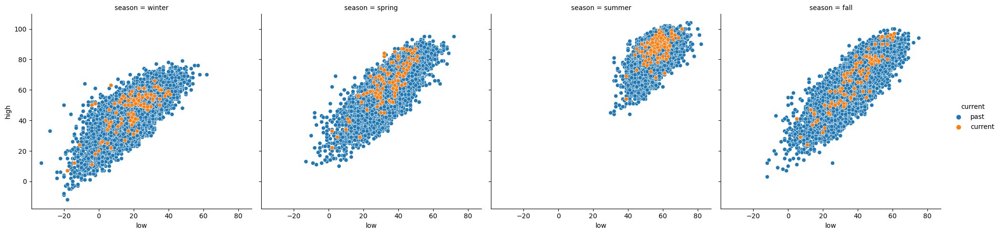
Normalization
df['tavg_normal'] = (df['tavg'] - df['tavg'].min())/df['tavg'].max()df['precip_normal'] = (df['precip'] - df['precip'].min())/df['precip'].max()df['snow_normal_zscore'] = (df['snow'] - df['snow'].mean())/df['snow'].var() # might have to be std instead of vardf['snow_normal'] = (df['snow'] - df['snow'].min())/df['snow'].max()df.info()<class 'pandas.core.frame.DataFrame'>
Int64Index: 46020 entries, 0 to 45989
Data columns (total 32 columns):
# Column Non-Null Count Dtype
--- ------ -------------- -----
0 date 46020 non-null datetime64[ns]
1 year 46020 non-null int64
2 month 46020 non-null int64
3 day 46020 non-null int64
4 high 46020 non-null float64
5 low 46020 non-null float64
6 precip 46020 non-null float64
7 snow 46020 non-null float64
8 snowcover 46020 non-null float64
9 high_max 46020 non-null float64
10 low_max 46020 non-null float64
11 precip_max 46020 non-null float64
12 snow_max 46020 non-null float64
13 snowcover_max 46020 non-null float64
14 high_min 46020 non-null float64
15 low_min 46020 non-null float64
16 precip_min 46020 non-null float64
17 snow_min 46020 non-null float64
18 snowcover_min 46020 non-null float64
19 high_mean 46020 non-null float64
20 low_mean 46020 non-null float64
21 precip_mean 46020 non-null float64
22 snow_mean 46020 non-null float64
23 snowcover_mean 46020 non-null float64
24 tavg 46020 non-null float64
25 weather 46020 non-null object
26 season 46020 non-null object
27 current 46020 non-null object
28 tavg_normal 46020 non-null float64
29 precip_normal 46020 non-null float64
30 snow_normal_zscore 46020 non-null float64
31 snow_normal 46020 non-null float64
dtypes: datetime64[ns](1), float64(25), int64(3), object(3)
memory usage: 12.6+ MBNow let’s save the dataset
df.to_csv("BoulderClimatePreProcessed.csv", index= False)
df2 =pd.read_csv("BoulderClimatePreProcessed.csv")
df2.head()| date | year | month | day | high | low | precip | snow | snowcover | high_max | ... | snow_mean | snowcover_mean | tavg | weather | season | current | tavg_normal | precip_normal | snow_normal_zscore | snow_normal | |
|---|---|---|---|---|---|---|---|---|---|---|---|---|---|---|---|---|---|---|---|---|---|
| 0 | 1897-01-01 | 1897 | 1 | 1 | 41.243902 | 18.747967 | 0.025478 | 0.529851 | 2.152542 | 70.0 | ... | 0.529851 | 2.152542 | 29.995935 | snow | winter | past | 0.499955 | 0.002806 | 0.344903 | 0.023975 |
| 1 | 1897-01-02 | 1897 | 1 | 2 | 43.715447 | 17.861789 | 0.011441 | 0.294203 | 1.968254 | 70.0 | ... | 0.294203 | 1.968254 | 30.788618 | snow | winter | past | 0.508762 | 0.001260 | 0.048053 | 0.013312 |
| 2 | 1897-01-03 | 1897 | 1 | 3 | 43.780488 | 19.634146 | 0.025424 | 0.453623 | 2.351852 | 68.0 | ... | 0.453623 | 2.351852 | 31.707317 | snow | winter | past | 0.518970 | 0.002800 | 0.248878 | 0.020526 |
| 3 | 1897-01-04 | 1897 | 1 | 4 | 43.943089 | 19.918699 | 0.028509 | 0.523077 | 2.322034 | 67.0 | ... | 0.523077 | 2.322034 | 31.930894 | snow | winter | past | 0.521454 | 0.003140 | 0.336370 | 0.023669 |
| 4 | 1897-01-05 | 1897 | 1 | 5 | 44.691057 | 20.146341 | 0.026991 | 0.557812 | 2.410714 | 69.0 | ... | 0.557812 | 2.410714 | 32.418699 | snow | winter | past | 0.526874 | 0.002973 | 0.380127 | 0.025240 |
5 rows × 32 columns